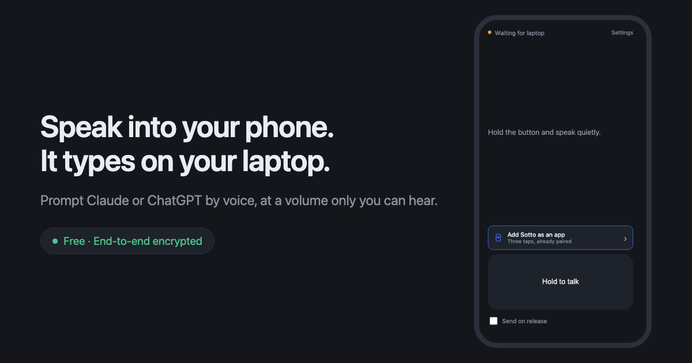

Prompt Claude or ChatGPT by voice, at a volume only you can hear. Hold a button on your phone and the words land in your laptop’s chat box.
Add to Chrome — freeThen scan a QR with your phone. About two minutes.

claude.ai, chatgpt.com, gemini.google.com, aistudio.google.com and perplexity.ai.
Your speech is turned into text on your phone and encrypted before it leaves the device. The relay forwards text it has no key to read — not as a policy, but by construction. Your phone and laptop agree on a key directly, and both show a matching safety number so you can check nobody intercepted the exchange.